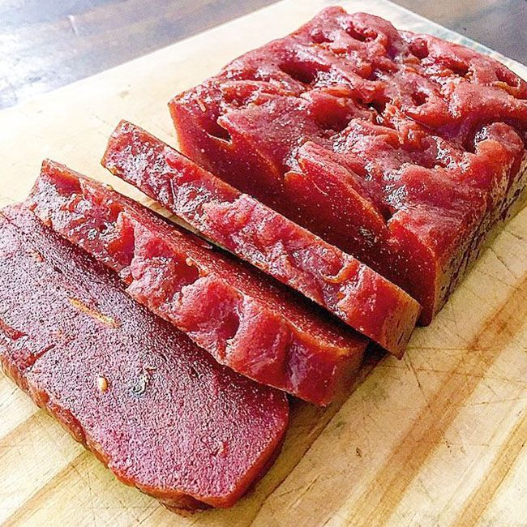

Ouro Preto 
Conheça mais sobre a cidade de Ouro Preto, uma cidade que parece um museu a céu aberto e rica em arte e história
Comidas Tipicas
Frango com Quiabo

É um prato tipico da culinária Mineira, que mistura as cultura indigena, africana e portuguesa, ele é feito com pedaços de frango dourado, cozido com quiabo e vindo sempre acompanhados do angu, é conhecido pelo seu sabor marcante e pela identidade gastronômica Mineira
Fontes: Turismoouropreto.com e coisasdaroca.com / imagem de Tangie Holifield
Frango ao Molho Pardo

O frango ao molho pardo é um prato tradicional da culinária mineira com herança portuguesa, de base simples e rústica. O frango é cozido lentamente com temperos, e o diferencial está no molho preparado com o sangue do animal, que dá a cor característica e o sabor marcante. Em Ouro Preto, esse prato se tornou símbolo da identidade cultural da cidade e pode ser encontrado em muitos restaurantes típicos.
Fontes: Blog Minas Gerais e circulando aqui / imagem de Alex Silva - estadão
Tutu de Feijão
O tutu de feijão é um prato típico mineiro que surgiu do hábito de aproveitar o feijão cozido do dia anterior. Ele é batido e engrossado com farinha de mandioca ou de milho, resultando numa textura cremosa, e servido com temperos, torresmo, linguiça, couve e ovo frito. Em Ouro Preto, durante o ciclo do ouro, o tutu se popularizou como uma refeição nutritiva, barata e que rendia bastante, alimentando trabalhadores das minas e famílias locais. Hoje, continua presente em restaurantes e festas da cidade, ao lado do feijão tropeiro e do frango ao molho pardo, representando a criatividade da cozinha mineira em transformar simplicidade em símbolo cultural.
Fontes: Imagem de depositphotos.com / sochodolak.pa@gmail.com
Feijão Tropeiro

O feijão tropeiro é um retrato da história de Minas Gerais, e Ouro Preto está no centro dessa tradição. Criado pelos tropeiros entre os séculos XVII e XIX, era uma refeição prática e nutritiva feita com feijão, farinha, torresmo, ovos, carne seca ou linguiça, sustentando os viajantes em longas jornadas. Durante o ciclo do ouro, Ouro Preto se tornou um importante ponto de parada e comércio das tropas, que deixaram marcas culturais e gastronômicas. Nesse contexto, o feijão tropeiro ganhou espaço como símbolo de resistência e engenho. Hoje, continua presente em restaurantes e festas da cidade, servido com arroz, couve e laranja, funcionando como memória viva do período em que viajantes, mineradores e comerciantes se encontravam em Ouro Preto.
Fontes: Wikipedia / imagem da Perdigão
Doce de Leite
O doce de leite em Ouro Preto vai além de ser apenas uma sobremesa: ele reflete a tradição artesanal da cidade e sua herança colonial. Produzido em pequenas fazendas e casas familiares, muitas vezes com leite de vacas criadas nas regiões próximas, ele representa o aproveitamento dos recursos locais, uma característica marcante da culinária mineira, além disso, o doce de leite se tornou presença constante em restaurantes e feiras da cidade, sendo servido em pratos típicos ou como lembrança gastronômica para visitantes. Ele simboliza a continuidade de uma tradição que atravessa gerações e conecta a história do ouro e das famílias que habitaram a cidade à mesa contemporânea.
Fontes: Imagem de @brownpapernutrition
Goiabada Cascão
A goiabada cascão tem raízes profundas na tradição mineira e Ouro Preto é um dos lugares onde esse doce ganhou força e prestígio. Nas antigas cozinhas coloniais, as goiabas abundantes da região eram cozidas em tachos de cobre, muitas vezes com a casca — daí que vem o nome “cascão” — para garantir sabor e consistência marcante. Esse modo de preparo artesanal, passado de geração em geração, ajudava a conservar a fruta e era essencial numa cidade que vivia o movimento do ouro, das tropas e dos viajantes.
Fontes:Imagem de Pinterest
Queijo Minas artesanal
O queijo artesanal de Minas Gerais, especialmente o Queijo Minas Artesanal, tem muito a ver com a formação cultural de cidades históricas como Ouro Preto. Durante o ciclo do ouro, o movimento de tropeiros e fazendeiros fez com que a pecuária se expandisse pela região das Minas. O leite produzido era transformado em queijo — não só para o consumo imediato, mas também porque era uma forma prática de conservação num tempo sem geladeira. Ouro Preto, sendo o grande centro urbano e comercial da Capitania, virou ponto de circulação e de consumo desse produto. Com o passar do tempo, o queijo deixou de ser apenas comida de tropeiro e virou parte da identidade gastronômica. Em Ouro Preto, ele aparece de várias formas: no Romeu e Julieta (queijo com goiabada cascão), nos doces de tabuleiro servidos com pedacinhos de queijo, e até como acompanhamento em pratos típicos, como o feijão tropeiro e o tutu. Além disso, a produção de queijos artesanais nas áreas rurais em torno da cidade mantém viva a tradição iniciada no período colonial, reconhecida hoje como Patrimônio Cultural Imaterial brasileiro. Resumindo: o queijo artesanal, em Ouro Preto, não é só um alimento, mas um elo entre o passado tropeiro, a cultura rural mineira e a mesa contemporânea da cidade, sempre presente nos restaurantes e festas locais.
Fontes:Imagem de condominio inconfidentes
Frutas em calda

Os doces de frutas artesanais de Ouro Preto surgiram no período colonial, quando famílias aproveitavam frutas locais — como goiaba, marmelo, laranja e figo — para fazer compotas e cristalizados em tachos de cobre, garantindo conservação sem geladeira. O distrito de São Bartolomeu se tornou referência nessa tradição, hoje registrada como Patrimônio Cultural Imaterial. Esses doces, servidos com queijo ou como sobremesa, mantêm viva a herança gastronômica e são parte da identidade turística e cultural de Ouro Preto.